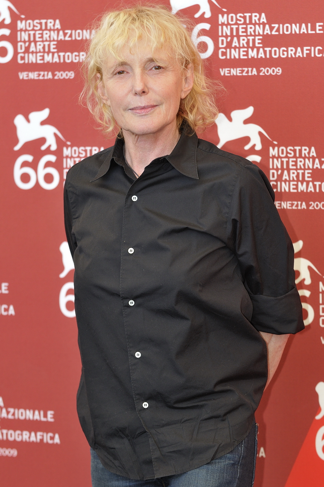
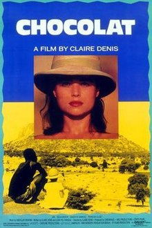
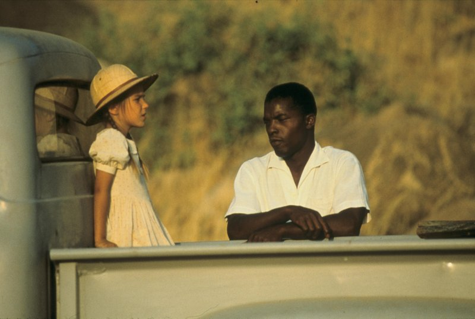

Director: Claire Denis

In a Claire Denis film, skin is always a character. Whether it be the leathery, rugged skin of Michel Subor‘s aged body in “The Intruder,” which Denis examines in leisurely takes, or the way that skin serves as a kind of titillation in the vampiric horror film “Trouble Every Day,” the beauty found in a Denis frame is natural and imperfect, and skin becomes a medium to express this. It’s the blemishes on Tricia Vessey‘s body in ‘Trouble,’ and the moles and warts on Subor’s back, that give Denis’ images texture. She would have no interest in the “clean and clear and under control” skin some advertisements promise.
But there’s a greater reason why skin is so emphasized, and it has to do with race. As a French woman born in Paris but raised in colonial Africa, Denis is fascinated by the friction between whites and blacks, which she’s considered throughout her career. You can track this theme from her autobiographical debut, 1988’s “Chocolat” to 1994’s “I Can’t Sleep,” a subdued procedural which examines the hardships of the immigrant experience in Paris, to 2000’s “Beau Travail,” a re-imagining of Melville‘s “Billy Budd,” which maps out a battle of white egos against the harsh terrain of Djibouti, to this year’s “White Material,” something of a career summation and a return to Africa, though this time the location is unnamed.
"But there’s a greater reason why skin is so emphasized, and it has to do with race. As a French woman born in Paris but raised in colonial Africa, Denis is fascinated by the friction between whites and blacks, which she’s considered throughout her career."
Chocolat (1988)

Though born in France, Claire Denis spent much of her childhood in Africa; her father was stationed there as a French Official, and she’s said in interviews that her family moved often so they could come to understand the “geography” of their region. Denis’s debut, “Chocolat,” uses these experiences; it’s the only film Denis herself considers autobiographical. It traces the early life of an adolescent girl, very significantly named France, whose upbringing bears similarity to Denis’ own. A framing device sandwiches the film between two present-day sequences: a prologue and stellar epilogue involving France as an adult visiting Cameroon after years away. In between, we’re thrust into Northern French Cameroon, where seven-year-old France lives with her parents and “houseboy” Protee (Isaach De Bankolé). Denis focuses on the relationship between Protee and France’s mother (Giulia Boschi), as seen through the young girl’s eyes—a relationship complicated by racial and class tensions. France herself observes, but not passively: she learns. Most significant is the knowledge her father imparts to her, describing the horizon as a line that is “there and not there” (a metaphor for the line which separates race and class). Many have praised Denis’ latest, “White Material,” but its shared themes are explored with a greater depth and clarity here.

"A framing device sandwiches the film between two present-day sequences: a prologue and stellar epilogue involving France as an adult visiting Cameroon after years away."
Beau Travail (2000)
This is the imposing masterwork of Claire Denis‘ illustrious career—an adaptation of Herman Melville‘s “Billy Budd” which relocates the story’s action to a French legionnaire camp in Northern Africa where jealousy and braggadocio inform an intense power struggle and elevate a classic parable to the level of Greek tragedy. In the opening scene, the film’s two protagonists, Sentain (Gregoire Colin) and Galoup (Denis Lavant), circle each other like predators; the soldiers are established as silent rivals through intense physical gestures: penetrating stares, arched backs and clenched fists. Denis’ surreal rendering of their harsh environment blurs the line between masculinity and an unspoken homoerotic tension, just as it makes ambiguous the separation between regimented exercise and interpretive dance. This director’s cinema is all about suggestion—erotic tension abounds but there’s no release. Denis focuses not on action, but inaction here: the soldiers rehearse tirelessly for a battle that never comes, and that hypothetical threat, looming in some potential future, infuses “Beau Travail” with a wellspring of unnerving tension. But Denis’ interests extend beyond the blows traded between her two brooding ciphers; setting the film in Djibouti hints at the pointed critique of “Chocolat,” her exceptionally underrated debut: that dark-skinned people often become casualties to the senseless whims and conflicts of white egotists.
"This director’s cinema is all about suggestion—erotic tension abounds but there’s no release. Denis focuses not on action, but inaction here: the soldiers rehearse tirelessly for a battle that never comes, and that hypothetical threat, looming in some potential future, infuses “Beau Travail” with a wellspring of unnerving tension."
Back